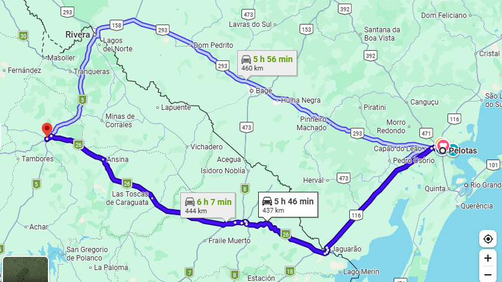
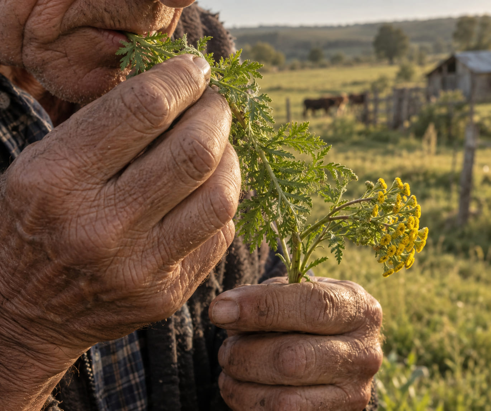
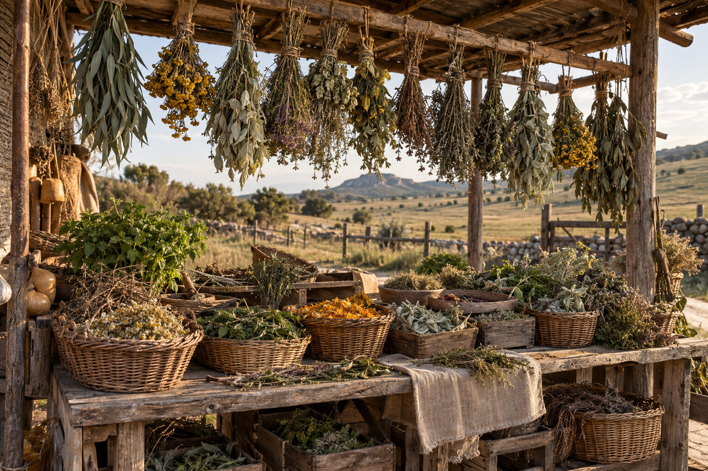

Um saber tecido entre culturas
O Uruguai se formou a partir de contribuições indígenas, europeias e afrodescendentes que, misturadas, deram forma a uma cultura híbrida. Os saberes medicinais sobre plantas que hoje circulam no campo de Tacuarembó são, em grande medida, resultado dessa mistura —e nem sempre é possível saber com exatidão o que corresponde a cada tradição.
Com este trabalho, Tabakián se propôs algo pontual dentro dessa trama: escutar quem se reconhece descendente de povos indígenas e registrar quais plantas associam a essa origem, como as usam e que lugar esse saber ocupa em suas vidas.
"Há bom alecrim, há boa hortelã, e boa camomila" —plantas que um colono acreditava serem europeias, mas que já enxergava em espécies locais parecidas. "Bom maracujá e boa erva-do-galo", acrescentava: essas sim eram daqui. La Herbolaria, em Hernández & Tabakián, 2011 (tradução do espanhol)
Dos cronistas coloniais à etnobotânica contemporânea
A que distância isso acontece?
O levantamento se concentrou nas populações distribuídas ao longo de dois corredores viários do departamento de Tacuarembó —desde a cidade de Tacuarembó (54.757 hab.) até povoados de apenas 19 habitantes, como Laureles. Para dar uma noção de escala a partir de Pelotas (RS), eis a distância até a capital do departamento:

De Pelotas (RS) até Tacuarembó: cerca de 344 km em linha reta. Por estrada, a distância real fica entre 437 e 460 km (aprox. 5h46–6h07 de carro), variando conforme a fronteira escolhida —via Jaguarão/Aceguá (rota mais curta) ou via Rivera/Dom Pedrito.
Localidades visitadas no levantamento
Distribuídas sobre os eixos das rotas 5 (sul–norte) e 26 (sul–noroeste) do departamento de Tacuarembó (INE, 2011):
Atores entrevistados em feiras, ervanarias e residências
As entrevistas —semiestruturadas e informais— foram realizadas em espaços bem diversos: feiras, ervanarias, domicílios particulares, consultórios médicos e até no mato, junto a quem coleta as plantas.
De onde dizem vir os entrevistados?
Ao indagar sobre sua ascendência, a maioria dos entrevistados em Tacuarembó mencionou ao menos um antepassado "brasileiro" —categoria ampla que pode incluir origem indígena, africana ou europeia. É sobre o 27% que se declarou exclusivamente descendente de indígenas que se apoia a análise das 21 plantas de possível uso indígena.
"Sim, eu acho que por parte da minha avó eram indígenas. Meu avô era basco, gente loira. Meus filhos são todos misturados, uns loiros, outro moreno, são todos entremeados." Curandeira indígena TDMC Tradução do espanhol
21 plantas de possível uso indígena
Esta é a lista central do artigo: as plantas que os declarados descendentes de indígenas apontaram como utilizadas por seus antepassados. Para cada uma, Tabakián registrou o sistema orgânico onde atua, a forma de consumo, a parte da planta utilizada e se é uma espécie nativa ou introduzida. Os ícones são esboços ilustrativos genéricos (não são desenhos botânicos precisos de cada espécie).
▾ Ver tabela completa (Tabela 1 do artigo original)
O sistema digestivo concentra um terço dos usos
Das 21 plantas de possível uso indígena, 70% têm dois ou mais usos medicinais registrados. O sistema digestivo é, de longe, o mais tratado, seguido por afecções sensoriais e do sistema musculoesquelético.

[ Colocar aqui: img/masticacion-palma-imperial.jpg ]
Foto documental de uma folha ou galho de "palma imperial" sendo preparado/mastigado como remédio tradicional, em ambiente rural.
Prompt sugerido (em inglês, para gerar a imagem): "Documentary close-up photograph of weathered hands holding a fresh green plant stem (palma imperial / Tanacetum vulgare) about to be chewed as folk medicine, rural Uruguayan countryside background softly blurred, natural warm afternoon light, earthy tones, editorial ethnobotany photography style, no visible faces for anonymity"
Mastigar plantas: um traço indígena persistente
54% das plantas de possível uso indígena são consumidas por mastigação, segundo o próprio texto do artigo —uma prática que vários entrevistados associaram diretamente à tradição indígena, comparável à mastigação da folha de coca ou do tabaco em outras regiões da América. (Nota: a tabela revisada na seção anterior usa "maceração" nessa coluna; ver aviso ali sobre essa divergência entre tabela e texto.)
"Sim, há plantas que se mastigam que eram usadas pelos indígenas, como a palma imperial. Se você tem um ferimento que não cicatriza, ferve, lava bem lavadinho e cura. Depois mastiga um galho de palma imperial e coloca no ferimento (...) Eles usavam tudo o que havia no mato, quase tudo era medicinal para os indígenas." Camponês indígena TIB Tradução do espanhol
"Com a saliva, dizia minha mãe, ajudava a curar. Por exemplo, arrancar uma folha do 'mercúrio', mastigar e colocar no ferimento (...) Quando aquilo se solta, está curado." Avó indígena TNC Tradução do espanhol
"O que resta é a etnia"
Além do catálogo de plantas, o artigo registra uma tensão de fundo: a dificuldade de reconstruir com certeza quais práticas vêm efetivamente dos povos indígenas, num território onde a identidade foi historicamente negada ou silenciada.
"Eu não me sinto charrua. Eu me sinto de povo originário (...) Meus ancestrais deixaram os ossos aqui (...) Roubaram a nossa identidade, roubaram... A única coisa que podemos identificar e dizer 'aqui estamos' é com os rostos. É a única coisa que resta!" Historiador indígena TRC · tradução do espanhol
Fonte: Tabakián, G. (2017). Trama, ano 8, n.º 8.
Folha e parte aérea: 63% dos usos

[ Colocar aqui: img/herboristeria-feira-tacuarembo.jpg ]
Barraca de feira ou ervanaria com maços de ervas medicinais secas e frescas expostas, ambiente rural uruguaio.
Prompt sugerido (em inglês, para gerar a imagem): "Wide-angle documentary photo of a rustic herbalist market stall in rural Uruguay, bundles of dried medicinal herbs hanging and displayed in baskets, warm natural light, muted earthy color palette (terracotta, moss green, cream), editorial photojournalism style, no readable text or logos"
Um saber que sai do espaço doméstico
Tradicionalmente, o conhecimento sobre plantas medicinais era transmitido dentro do núcleo familiar. Hoje, segundo registra o artigo, surgem novas formas de transmissão: feiras, ervanarias e cursos que instalam esse saber fora da órbita doméstica, alcançando novos espaços sociais antes restringidos pelo receio da marginalização ou do estigma de "curandeirismo".
Um acervo cultural, não um catálogo fechado
É complexo —e talvez impossível— estabelecer com certeza quais plantas "pertencem" a um grupo cultural específico. Mas o cruzamento entre a origem nativa das espécies, o hábito da mastigação e os relatos dos próprios descendentes indígenas permite traçar, ainda que parcialmente, uma possível tradição fitoterápica local.
Além dos percentuais, o que o trabalho de Tabakián deixa claro é que essas plantas fazem parte de um acervo cultural vivo: um saber que se adapta, se mistura e se transmite —às vezes em silêncio, às vezes na feira do povoado— e cuja permanência depende, hoje como sempre, de continuar sendo contado às próximas gerações.